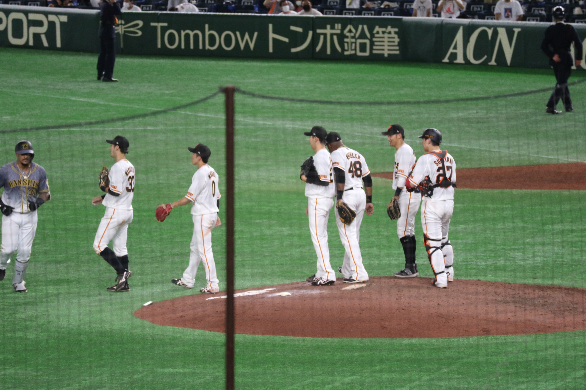

21web team
早稲田大学人間科学部
降旗真由
健康福祉科学科2年
広報制作局 Webチーム
My class schedule
時限
月
火
水
木
金
1
グローバリゼーション論
2
人間計測・人間情報モデリング
建築人間工学
情報科学研究法
３
情報社会におけるキャリアデザイン
言語情報科学
4
情報社会におけるキャリアデザイン
言語学
英語圏文化概論
5
健康福祉科学概論
6
データリテラシー3
My hobby

1年生の時充実していた授業
臨床心理学概論
人工知能論
人間行動学
ここをクリック！